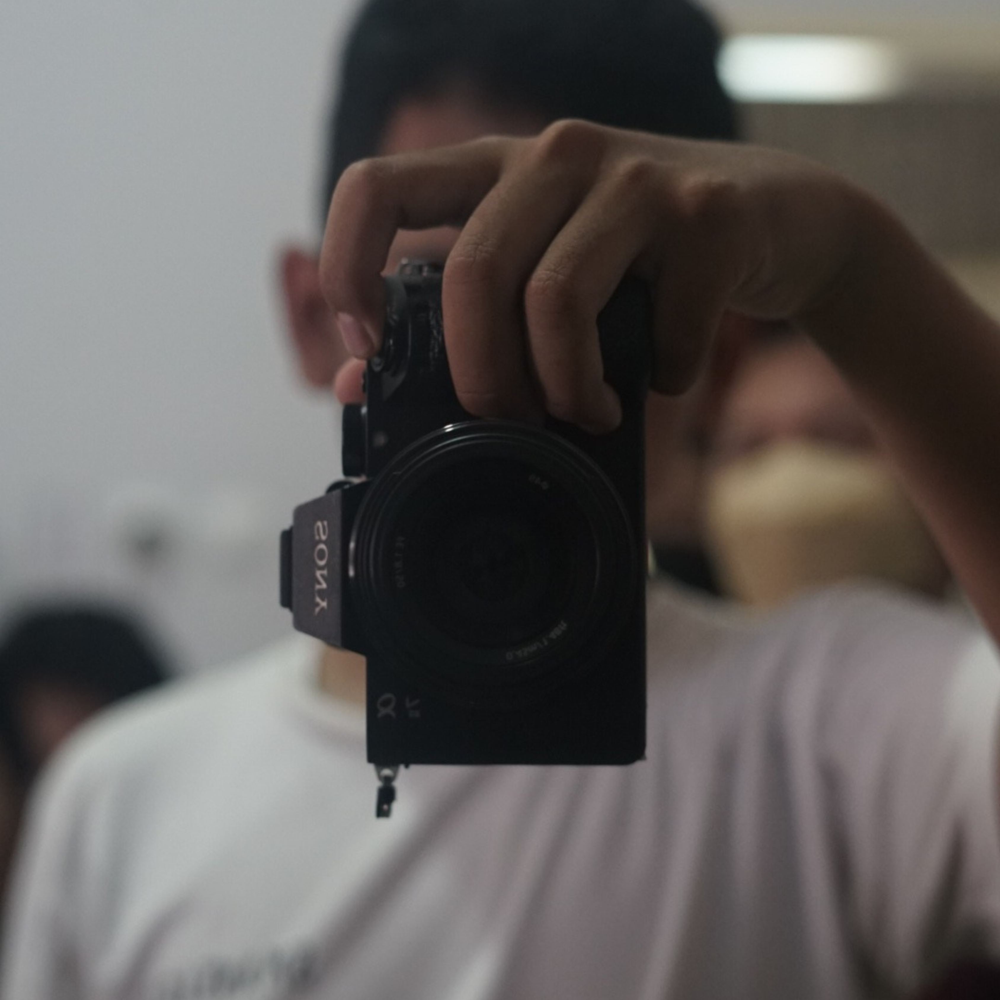

Tentang
Perkenalkan nama saya Dhani Fikri Setiawan. Saya saat ini adalah mahasiswa di Universitas Komputer Indonesia (UNIKOM), dan sedang menempuh semester 2 di jurusan Sistem Informasi. Saya sangat antusias untuk mempelajari dan mengembangkan keterampilan di bidang teknologi informasi, khususnya dalam hal pengolaan dan integrasi Sistem Informasi